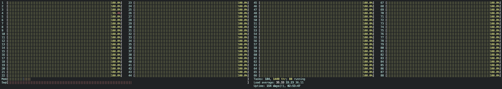

これは琉大アドベントカレンダー12日目の記事です。
singularityでjupyterLab環境を作る
研究でsingularityを使っていたので、それについて少し書きます。
2022年9月頃まで動かしていた環境なので、今は動かない可能性がありますが参考になれば幸いです。
why singularity？
2022年の4月頃、研究でGPT-2を学習とデータの前処理をしようと思っていました。
ただ、その期間はちょうど研究室にあるGPUサーバを色んな人が使っていて空きがなかったため、学科サーバで学習させることに。
ちなみに、研究室のサーバがコア数14スレッド数28メモリ128GBなのに対して学科サーバがコア数22スレッド数88メモリ512GBなので、前処理用にちょっとくらい適当なコードを書いてもパワーで押し切れてしまう環境です。
学科サーバではどうやらsingularityという仮想技術？を用いているため、私もそれを使ってやることにしました。
singularity + GPU
singularityの使い方に関してはsyskan、nal先生がとても丁寧にまとめているので、リンクを貼って満足します。
- Singularityのすゝめ
- SingularityとSlurmの実践例
- 新システムとしてTesla V100SでSingularityでSlurmな環境が導入されたので、BERT with SentencePiece を日本語 Wikipedia で学習してモデルを公開しましたを使ってlivedoor ニュースコーパスのジャンル推定するfine-tuningしてみた。
singularity + GPU + jupyterLab
本題ですが、jupyterLabをsingularity + GPU環境で動かします。
といってもやることはpipかcondaでinstallするだけで十分です。
下がそのdefinition fileです。
ほとんどDockerfileと同じように書けます。
umahara からのオススメを受けてmambaを使っています（速くて良い）。
# singularity/environment.def
Bootstrap: docker
From: pytorch/pytorch:1.11.0-cuda11.3-cudnn8-runtime
%post
conda config --add channels conda-forge
conda config --remove channels defaults
conda install mamba
mamba install -y jupyterlab matplotlib ipywidgets scikit-learn
これをbuildしてexecすれば立ち上がるはず…！
ここで、GPUを使用するためには--nvオプションを付ける必要があります。
# build
$ singularity build -f -s singularity/image singularity/environment.def
# jupyter lab
$ singularity exec --nv singularity/image jupyter-lab --allow-root --no-browser --port 8888
ちなみに、シェルに入りたい場合は以下のようにすれば良いはずです。
$ singularity shell --nv singularity/image
毎回の起動を楽にするために
execで毎回 jupyter-lab ... と書くのが大変なので、%runscriptセクションを使って実行したいコマンドを記述すると簡単に起動することができます。
# singularity/environment.def
Bootstrap: docker
From: pytorch/pytorch:1.11.0-cuda11.3-cudnn8-runtime
%post
conda config --add channels conda-forge
conda config --remove channels defaults
conda install mamba
mamba install -y jupyterlab matplotlib ipywidgets scikit-learn
%runscript
jupyter-lab --allow-root --no-browser --port 8888
もう一度buildして…
実行の際にはこれを打つだけ！
$ singularity run --nv singularity/image.sif
最後に
学科サーバの環境がものすごく良いので、もし「もっと多くのメモリが欲しい」「もっとコア数が欲しい」と思っているのであればぜひ使ってみてください！
締めに学科サーバ上で88並列で処理した際の画像を貼っておきます。
